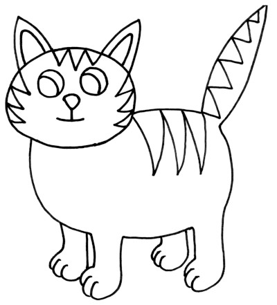
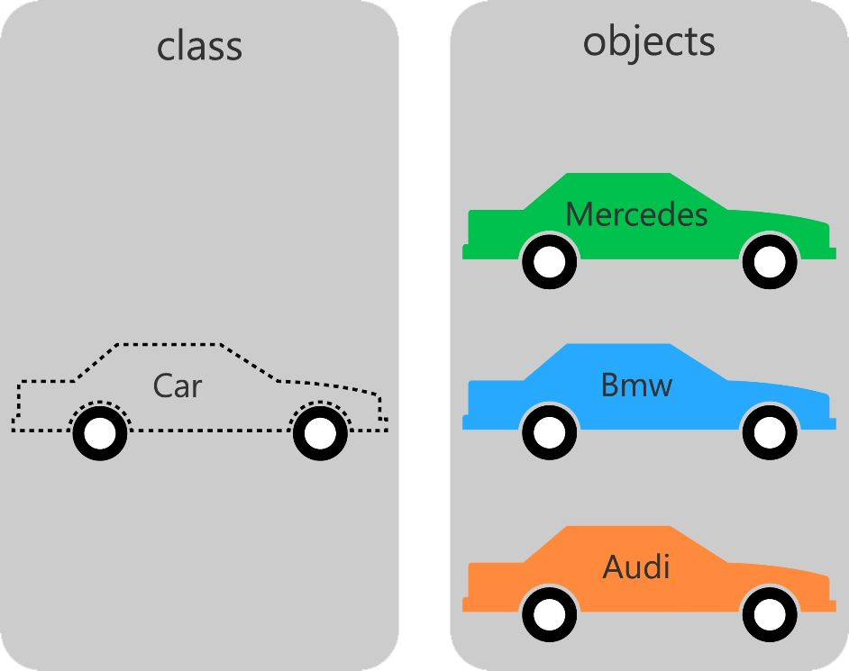

Tipos de datos Abstractos
Created by rmarku
¿Qué es la Información?
Unidad básica de información (BIT)- 1 bit ➡️ 2 posiciones (0-1)
- n bit ➡️ 2n posiciones
Enteros Binarios
Representación de enteros positivos
00100110 ➡️ 21 + 22 + 25=2 + 4 + 32=38Representación de enteros Negativos (complemento a 1)
11011001 ➡️ -38Podemos representar desde -2(n-1)-1 hasta 2(n-1)-1
Representación de enteros Negativos (complemento a 2)
11011010 ➡️ -38Números con coma Binarios
Notación de punto flotante
El número 387,53 se representa como 38753x10-2
El numero consta de una MANTISA(24) y un EXPONENTE(8).
Comunmente se utilizan 32 bits
Esto nos permite representar números desde
223-1 x 10127 ➡️ 10-128
Caracteres
ASCII
➡️Interpretación de binarios en símbolos gráficos
Hay distintos encoding, ASCII, UTF8, UTF16, ISO, etc...
Lo mas común es utilizar 8bits, pero hay encodings de 7, 10, 16, 32 bits...
El número binario 00100110, puede ser el número 38, el 0x26 o el simboló '&'
Hardware y Softare
- La memoria de la PC es un conjunto de BITs
- Los bits se agrupan de a BYTEs
- Las computadoras tienen un conjunto de datos nativos
- Los lenguajes de programación de alto nivel, ayudan a simplificar el uso de tipos de datos.
Tipo de Dato
- No es un dato, es lo que puede contener
- Un tipo de dato es, en esencia, un espacio en memoria con restricciones.
- Por ejemplo, el tipo "int" representa, generalmente, un conjunto de enteros de 32 bits cuyo rango va desde el -2.147.483.648 al 2.147.483.647
- También se restringen las operaciones que se pueden realizar en ellos.
- No confundirlos con Tipos de Datos Abstractos
Tipos de Datos Abstractos
Abstracción: consiste en tomar las cualidades o características que nos resulten mas relevantes de un objeto, con el fin de delimitar el analisis de este
➡️ Tipos de Datos Abstractos
- Los TDA son una abstracción de algún tipo de dato
- Formalmente se trata de un modelo matemático para tipos de datos que están definidos por su comportamiento o semántica.
- Es un modelo matemático compuesto por una colección de operaciones definidas sobre un conjunto de datos para el modelo.
- A nivel usuario, se pueden ver el esquema de los datos y las operaciones para manipular los elementos que lo componen.
Estructuras de datos
Las estructuras de datos son la implementación de un Tipo de dato abstracto.

Introducción a la Programación Orientada a Objetos
Es un paradigma de porgramación que es muy cercano a como expresamríamos las cosas en la vida real.

¿Qué es una clase?
- Una clase es una plantilla para saber como crear Objetos
- Una clase es un modelo que define un conjunto de Variables(el estado) y métodos para operar con el estado (el comportamiento)
- Los objetos se crean a partir de de las clases y se llaman Instancias
- Es una forma de abstraerse de los datos y sus operaciones y verlos como una "caja negra".
¿Qué es una clase?
- Una clase es una plantilla para saber como crear Objetos
- Una clase es un modelo que define un conjunto de Atributos(el estado) y Métodos para operar con el estado (el comportamiento)
- Los objetos se crean a partir de de las clases y se llaman Instancias
- Es una forma de abstraerse de los datos y sus operaciones y verlos como una "caja negra".
¿Qué es una clase?
Clases: Atributos o Variables miembros
- Son variables definidas dentro de la clase
- Pueden ser privadas o publicas
- Definen el estado del objeto
- Cada objeto tiene sus propios atributos
Clases: Métodos o Funciones miembros
- Son funciones que reciden dentro de la clase
- Pueden ser privadas o publicas
- Comumente operan con los atributos del objeto
- Permiten darle comportamiento al objeto
Ojetos
- Son una instancia creada a partir de una clase.
- Poseen Identidad, lo que los diferencia de otros objetos
- Existe realmente en memoría.
- Cada uno tiene sus propios atributos y sus metodos trabajan con estos atributos.
Clases: Sintaxis
class Punto {
//por omisión los miembros son 'private' para que sólo
//se puedan modificar desde la propia clase.
private:
// Variable miembro privada
int x;
int y;
public:
// Constructor
Punto();
// Destructor
~Punto();
// Funciones miembro o métodos
int ObtenerX();
int ObtenerY();
};
Constructor
Son unos métodos especiales que se ejecutan automáticamente al crear un objeto de la clase. En su declaración no se especifica el tipo de dato que devuelven, y poseen el mismo nombre que la clase a la que pertenecen. Al igual que otros métodos, puede haber varios constructores sobrecargados, aunque no pueden existir constructores virtuales.Destructor
Los destructores son funciones miembro especiales llamadas automáticamente en la ejecución del programa, y por tanto no tienen por qué ser llamadas explícitamente por el programador. Sus principales cometidos son:- Liberar los recursos computacionales que el objeto de dicha clase haya adquirido en tiempo de ejecución al expirar éste.
- Quitar los vínculos que pudiesen tener otros recursos u objetos con éste.
Archivo .h
En el archivo .h se escribe el prototipo de la clase
class Punto {
private:
int x;
int y;
public:
Punto();
~Punto();
int ObtenerX();
int ObtenerY();
};
Archivo .cpp
En el archivo .cpp se escribe la implementación de los metodos
Punto::Punto(){
x=0;
y=0;
}
int Punto::ObtenerX(){
return x;
}
int Punto::ObtenerY(){
return y;
}
Palabra clave this
Es un puntero que hace referencia al propio objeto. Es utilizado para poder acceder a los atributos de la instancia del objeto al cual pertenece el método
Comúnmente puede ser obviado su uso, ya que llamando directamente al atributo también podemos acceder
int Punto::EscribirY(int val){
y = val; // no hace falta utilizar this
}
int Punto::EscribirX(int x){
this->x = x;
// Como x ahora es una variable dentro de la función, para acceder al atributo
// utilizo el puntero this
}